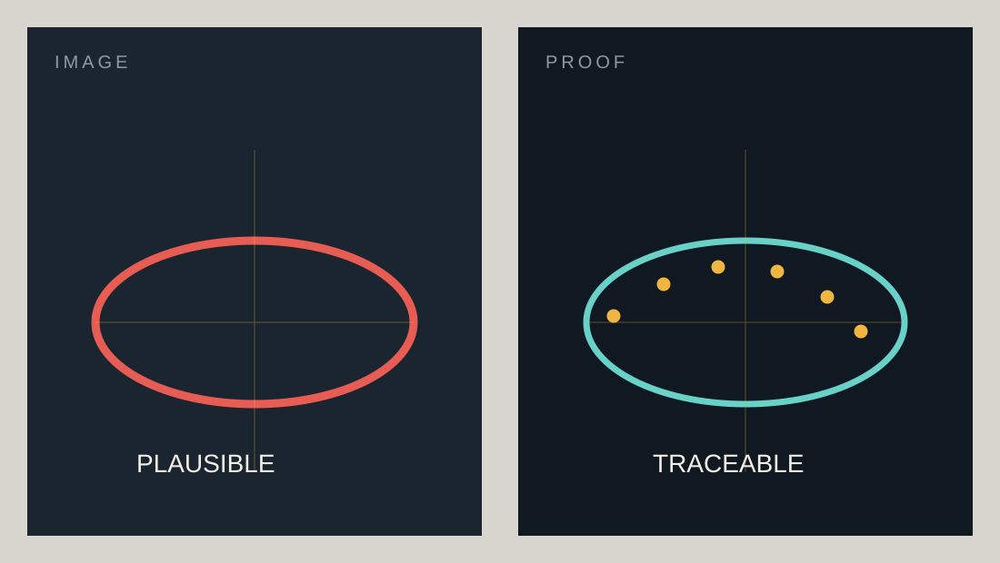
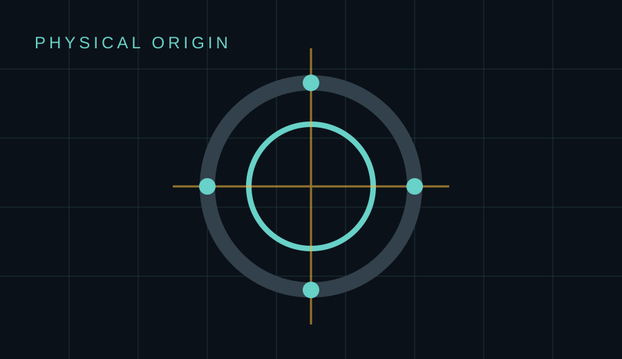
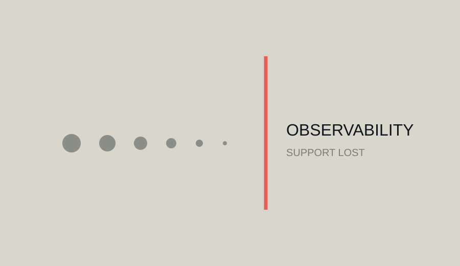

CASE 001 / SPATIAL EVIDENCE
The line is visible. The claim is not yet earned.
An oblique image can suggest a boundary. It cannot certify one on its own.
THE QUESTION
When does an image become a measurement?
A projected line may look precise, even convincing. But visual agreement does not prove that the line is physically correct.
The work behind JoosAtlas separates what the camera observes from what the field establishes, what the model assumes, and what the audit is allowed to claim.

INTERACTIVE / EVIDENCE LENS
Move the lens.
See what the image alone cannot prove.
Outside the lens: a plausible boundary.
Inside the lens: independent reference structure.

 AUDIT LAYER
AUDIT LAYER
CHAIN OF CUSTODY
A measurement is not a picture. It is a traceable sequence of roles.

The field comes first.
A boundary must originate from a physical reference before any image can evaluate it.
CLAIM GATE
A system should know when not to speak.
Three conditions must survive before a measurement claim is permitted.
FAILURE ATLAS
Failure is not noise around the result. It is part of the result.

The feature exists. The image cannot support it.
When the visible structure falls below reliable observation, the correct output is not a number. It is a refusal.
Unverified is not zero.
Do not claim what the measurement chain cannot support.
RELEASE LEDGER
What is public.
What remains withheld.
This public experience communicates the research problem, qualitative findings, and evidentiary philosophy without disclosing unpublished implementation details.